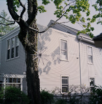

Ever since I started the "What's New" section on my home page, I've had to have a place for those interesting tidbits to age gracefully. I couldn't bear to throw them away! Here are all those featured news items that used to be new!
January/February 2009
Our Beloved Tree
En Famille has MOVED to elsadorfman.com!
The Polariod: the iPod of another generation


webmaster kyle and portrait photographer elsa @
hockney show fotobooth, mfa 4/2/06
November 2008

June 2008
May 2008

December 2007
November 2007

October 2007
September 2006
Check the updated Link's section
and see Elsa's stuff on Wikipedia!
July 2006
Columbia Graduation 2000
Isaac Silverglate and Anthony Ramirez II
Isaac won Silver Lion for his
Combos commericals at Cannes 2006.
He works for TBWA\Chiat\Day.
Anthony Ramirez is the Senior Director of
the After School Division of SoBRO
the community revitalization group in the South Bronx.
He also is the co-founder of Mainland Media.

June 2006
GOOD-BYE Winter!

March 2006
Check out Works by Elsa's Friends

{kind=link}
{kind=link}
{kind=link}
{kind=link}
{kind=link}
{kind=link}
{kind=link}
{kind=link}
{kind=link}
{kind=link}
{kind=link}
{kind=link}
{kind=link}
{kind=link}
{kind=link}
{kind=link}
{kind=link}
{kind=link}
{kind=link}
{kind=link}
{kind=link}
{kind=link}
{kind=link}
{kind=link}
August 2005
recent interviews with Elsa
- New England Cable News: 4.6 min taped interview & 20X24 polariod camera demo
- http://art.webesteem.pl/11/dorfman_en.php by Adam Szrotek & Sylwia Banasiak
- http://www.photo.net/interviews/elsadorfman/ by Lisa Surati
- http://www.mamutphoto.com/content/view/27/29/lang,en by Patrick Jan Van Hove
- http://jeff-kent.com/Articles/PG34-37O.PDF by Jeff Kent

July 2005
Being Philisophical about my wisteria
{kind=link}
June 2005
sleuthing Creeley's eye...
a meditation on portraits and photoshop
{kind=link}
{kind=link}
March 2005
Robert Creeley
died on march 30
at sunrise in odessa tx
Creeley's website
Creeley in Elsa's housebook
Creeley and Dorfman's en famille book (web version)
Bob Oakes talks with Elsa about Creeley on WBUR
{kind=link}

November 2004
{kind=link}
Find Elsa's Books


Please change your links and bookmarks to elsadorfman.com!
Elsa thanks her cybergodmother, photo.net, her longtime, most generous host at furfly.com, and her current web host Mike Sisk at TCP/IP Ranch, LLC.
Copyright 1970-2010 © Elsa Dorfman.
Inquiries for the use of Elsa's content are welcomed!
Please
read these guidelines.
Contact
Elsa Dorfman via email or send Website Feedback to her webmaster.